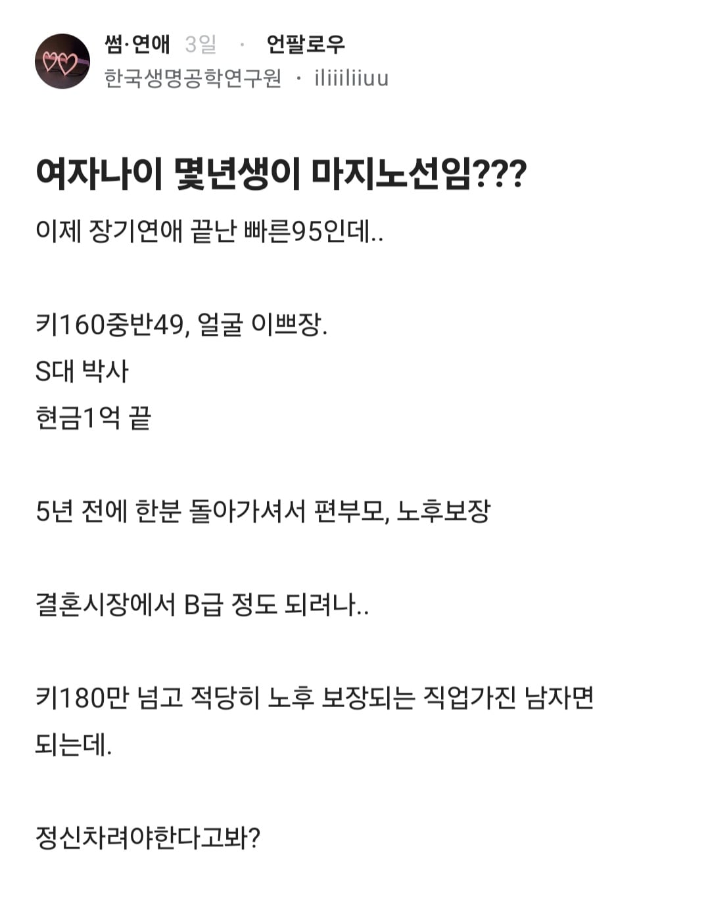
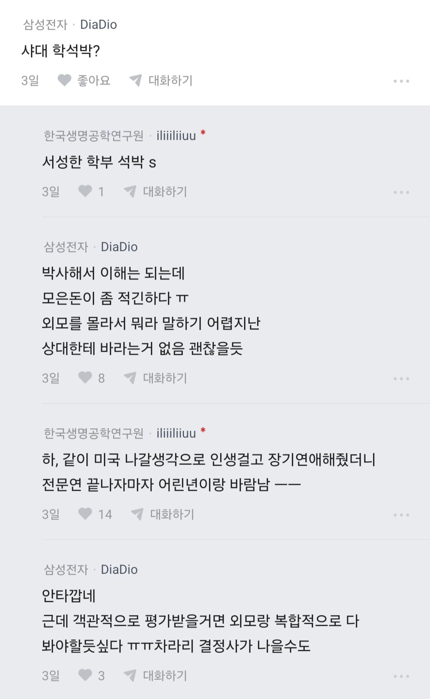
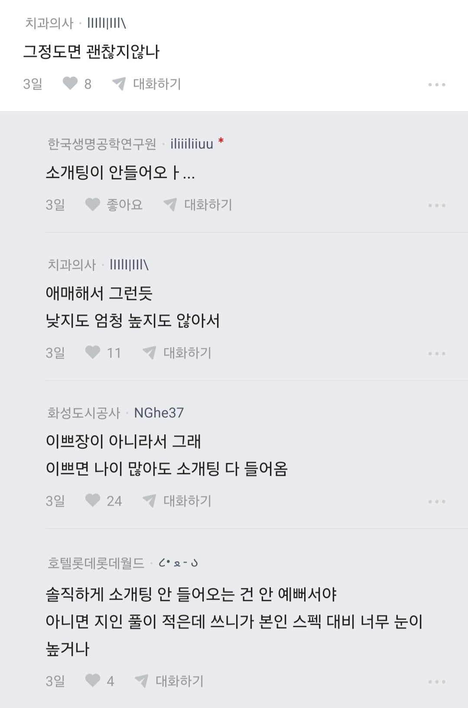
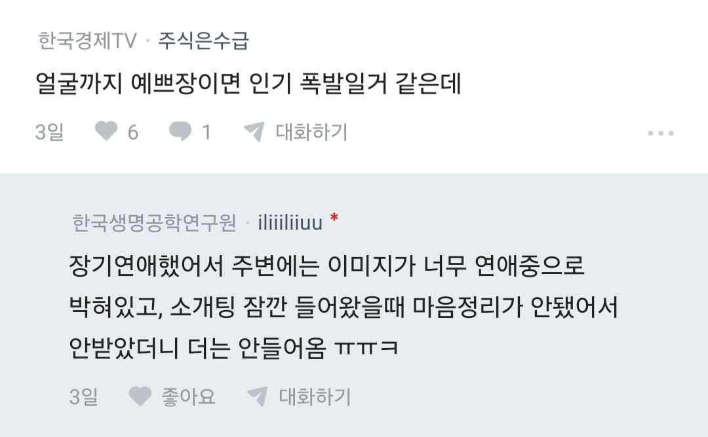
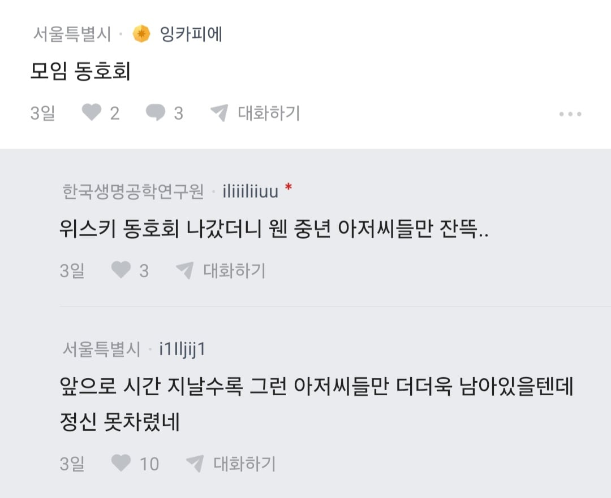
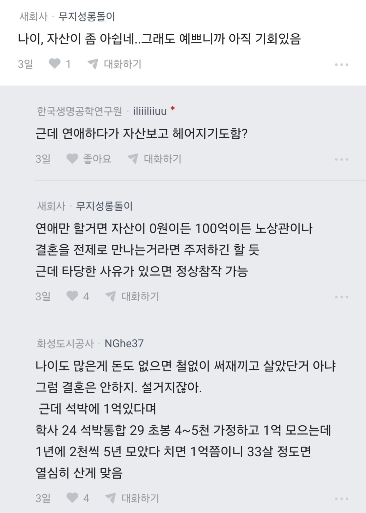
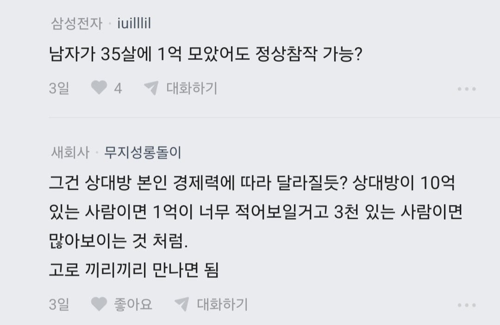
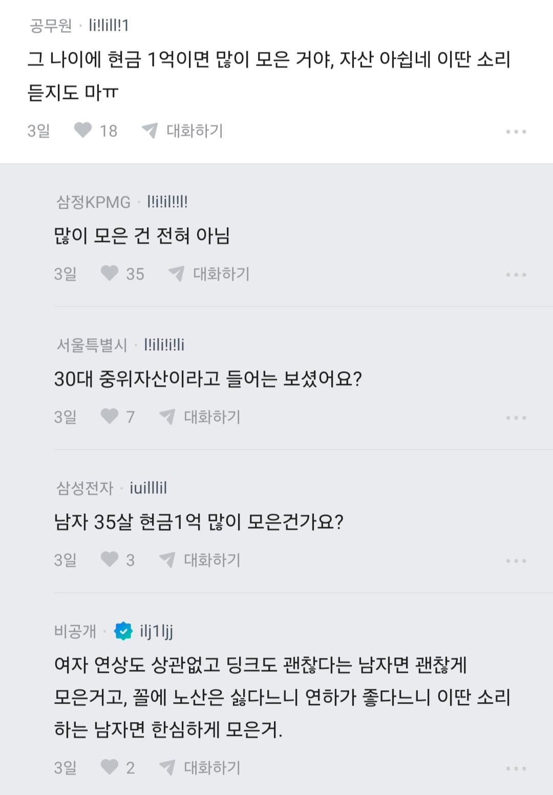
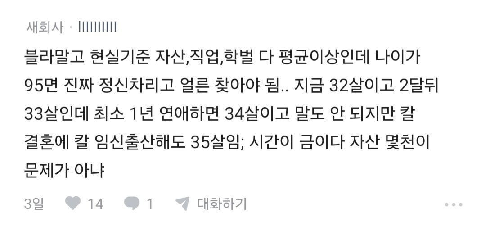
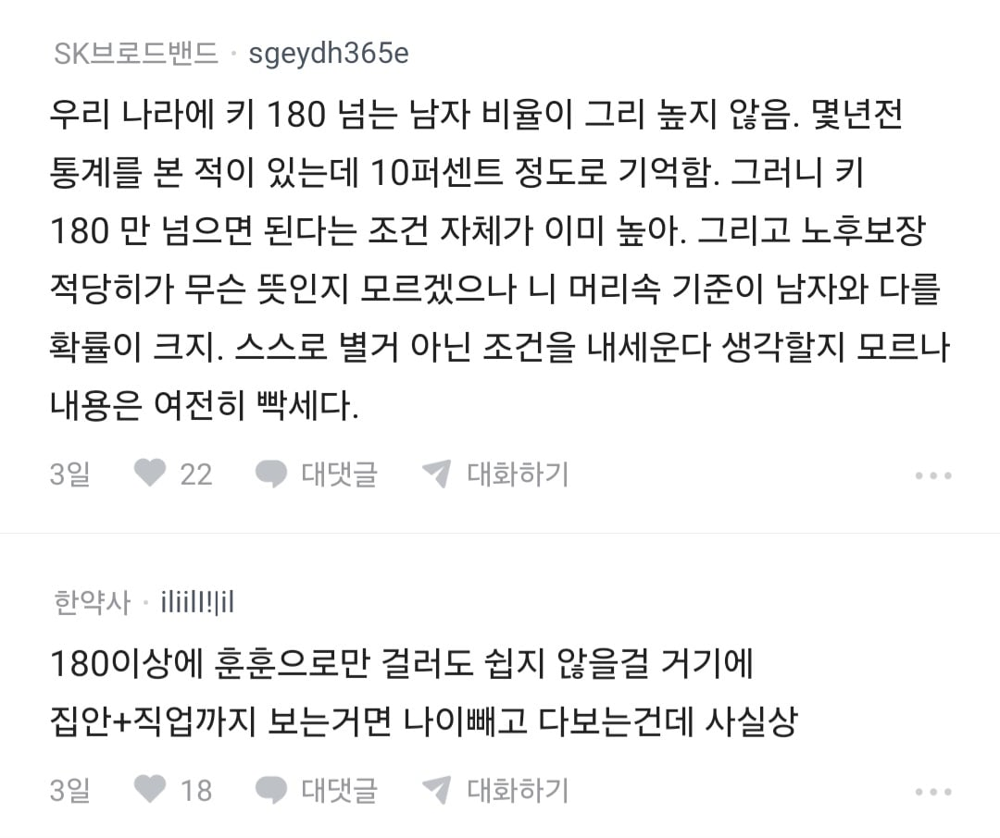
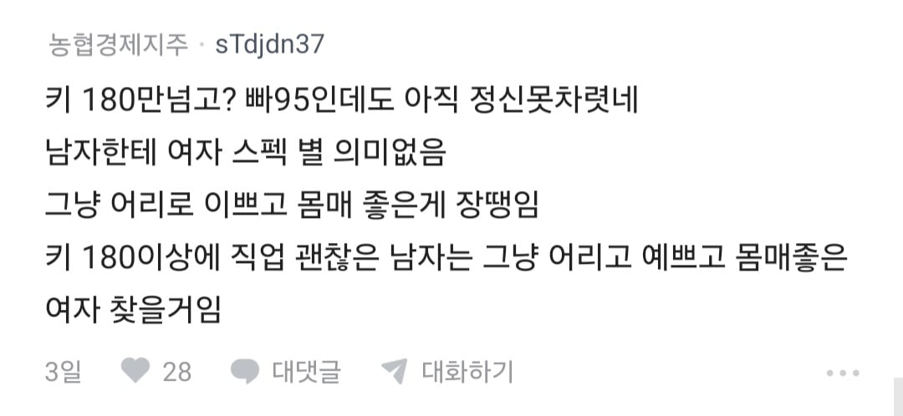
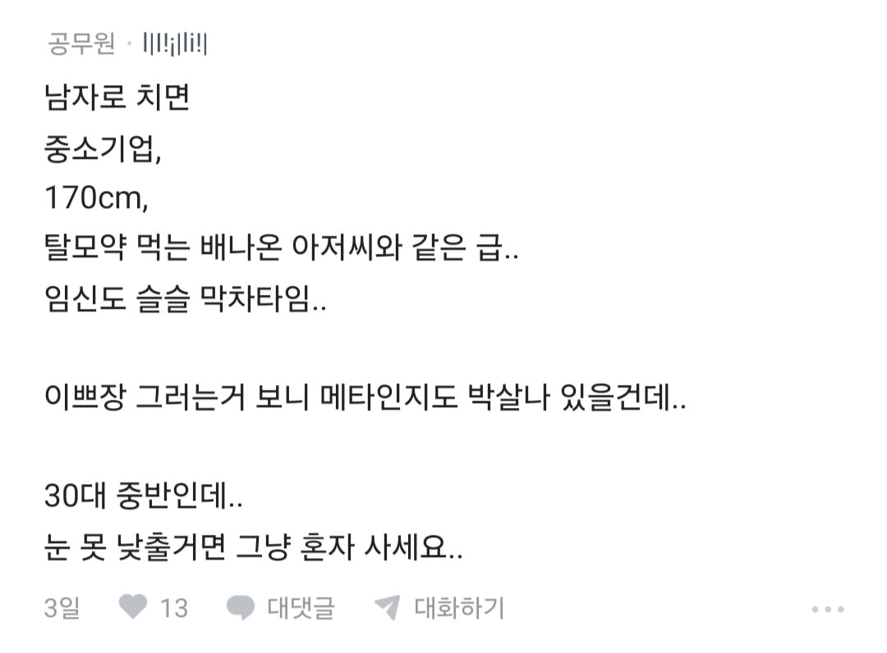
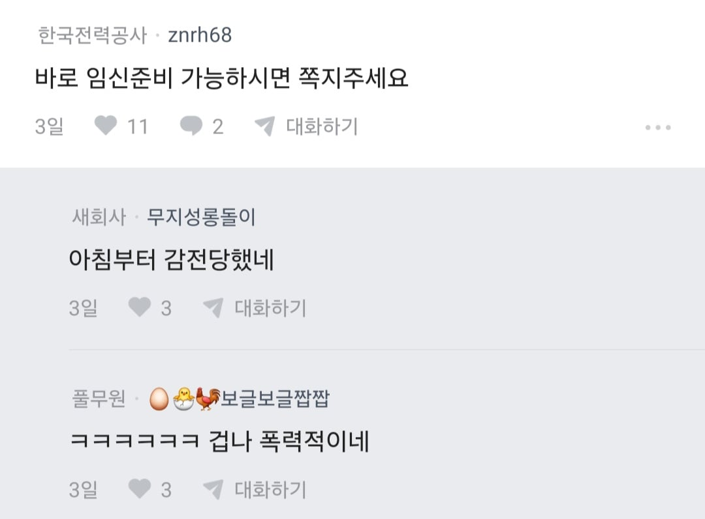













댓글
수집 당시 댓글 6개
앙대 · 2 시간 전
닉바꿈 · 2 시간 전
여성분이 원할 능력 있고 잘생긴 사람은 굳이 저 여성분을 안 고를거같고
그렇다고 눈을 낮추기엔 본인 스펙이 아깝고 그런 상황이실듯
버쨩 · 2 시간 전
기준 빡새긴하다 남자 97 이제 7천모았는데;
· 커피색스타킹 · 2 시간 전
인터넷이니까 지랄이지 현실 97 7천이면 상위권임
일간알림수집중 · 20 분 전
1억이 돈 없다니
에르가 · 6 분 전
뭐 요즘 같은때 31살이면 많은 나이도 아니고, 학력 높게 쳐주는 사람도 많음. 저분한테 소개팅이 안들어오는 이유는 장기연애를 했기때문임